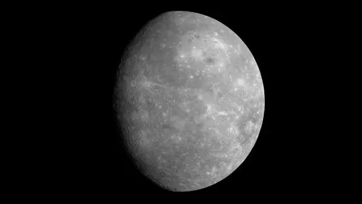

Mercury
The closest planet to the Sun, Mercury is a small, rocky world with extreme temperatures, ranging from scorching hot days to freezing cold nights.

Venus
Venus is similar in size to Earth but covered in thick, toxic clouds. It’s the hottest planet in the Solar System due to its powerful greenhouse effect.